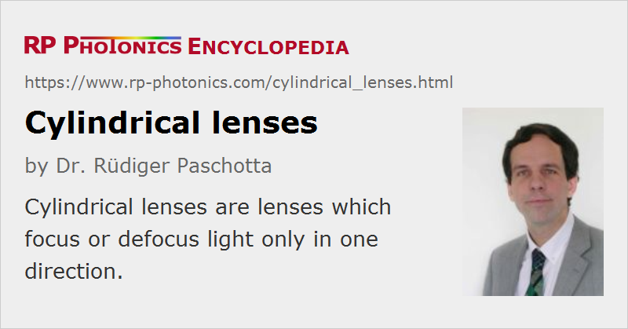

Cylindrical Lenses
Definition: lenses which focus or defocus light only in one direction
More general term: lenses
German: zylindrische Linsen
How to cite the article; suggest additional literature
Author: Dr. Rüdiger Paschotta
Cylindrical lenses are optical lenses which are curved only in one direction. Therefore, they focus or defocus light only in one direction, for example in the horizontal direction but not in the vertical direction. As for ordinary lenses, their focusing or defocusing behavior can be characterized with a focal length or its inverse, the dioptric power.
Usually, the surface curvature of a cylindrical lens is of spherical type, but there are also aspheric cylindrical lenses. Further, there are cylindrical gradient-index lenses, not exhibiting any surface curvature.
Applications
Cylindrical lenses can be used to obtain a beam focus of elliptical form. That can be required, for example, for feeding light through the entrance slit of a monochromator or into an acousto-optic deflector, or for conditioning pump light for a slab laser.
There are fast axis collimators for diode bars, which are essentially cylindrical lenses – often with an aspheric shape.
Cylindrical lenses cause astigmatism of a laser beam: a mismatch of focus position for both directions. Conversely, they can also used for compensating astigmatism of a beam or an optical system. For example, they may be required for collimating the output of a laser diode such that one obtains a circular non-astigmatic beam.
Suppliers
The RP Photonics Buyer's Guide contains 81 suppliers for cylindrical lenses. Among them:
Questions and Comments from Users
Here you can submit questions and comments. As far as they get accepted by the author, they will appear above this paragraph together with the author’s answer. The author will decide on acceptance based on certain criteria. Essentially, the issue must be of sufficiently broad interest.
Please do not enter personal data here; we would otherwise delete it soon. (See also our privacy declaration.) If you wish to receive personal feedback or consultancy from the author, please contact him e.g. via e-mail.
By submitting the information, you give your consent to the potential publication of your inputs on our website according to our rules. (If you later retract your consent, we will delete those inputs.) As your inputs are first reviewed by the author, they may be published with some delay.
See also: lenses, astigmatism
and other articles in the category general optics
|  |
If you like this page, please share the link with your friends and colleagues, e.g. via social media:
These sharing buttons are implemented in a privacy-friendly way!